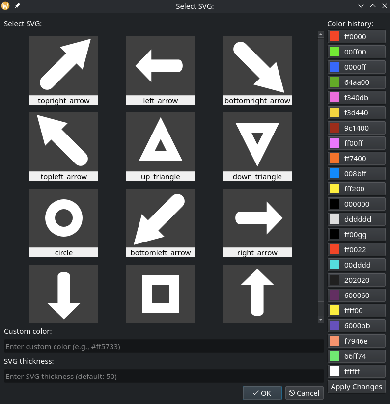
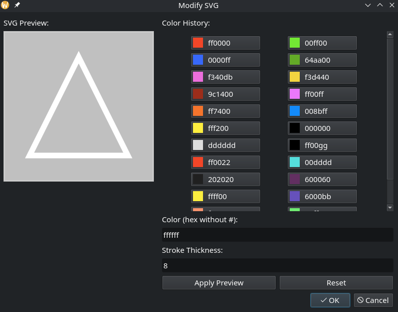

SVG Features¶
PyZUI provides comprehensive support for Scalable Vector Graphics (SVG) files, allowing users to add, modify, and manipulate vector graphics within the zooming user interface. This document covers all SVG-related features available in PyZUI.
Overview¶
SVG (Scalable Vector Graphics) is an XML-based vector image format that supports interactivity and animation. In PyZUI, SVG files can be:
Added to scenes as media objects
Modified with custom colors and line thickness
Embedded in scene files for portability
Rendered at any zoom level without quality loss
Key Features¶
SVG Picker Dialog: Browse and select SVG files from the
data/SVG/directoryColor Customization: Apply any color to SVG strokes and fills
Thickness Adjustment: Modify line/stroke thickness
Modification Dialog: Edit existing SVG objects in the scene
SVG Cache: Efficient storage of modified SVG files
Embedding Support: Modified SVGs embedded in scene files
Adding SVG Objects¶
There are two main ways to add SVG objects to your PyZUI scene:
Method 1: Using the SVG Picker Dialog
Open the SVG picker dialog from the main menu or toolbar
Browse available SVG files in the
data/SVG/directorySelect an SVG file to preview it
Choose a color from the color history or enter a custom hex color
Adjust the stroke thickness if needed
Click “Apply Changes” to preview modifications
Click “OK” to add the modified SVG to your scene
Method 2: Direct File Import
SVG files can also be added directly by: - Dragging and dropping SVG files into the PyZUI window - Using the “Add Media” dialog to select SVG files - Loading scene files that contain embedded SVG objects
SVG Picker Dialog¶
The SVG Picker Dialog (OpenSVGPickerInputDialog) provides an intuitive
interface for selecting and customizing SVG files:
{kind=link}

Interface Components:
SVG Preview Grid: Thumbnail previews of all available SVG files
Color History: Recently used colors for quick selection
Custom Color Input: Enter any hex color (with or without #)
Thickness Input: Adjust stroke width (default: 50)
Apply Changes Button: Preview modifications before adding
OK/Cancel Buttons: Add to scene or cancel operation
Available SVG Files:
PyZUI includes a collection of basic shapes in the data/SVG/ directory:
Arrows (various directions)
Geometric shapes (circles, squares, triangles)
Basic icons and symbols
Custom shapes (add your own SVG files)
Modifying Existing SVG Objects¶
Existing SVG objects in your scene can be modified using the
Modify SVG Dialog (ModifySVGInputDialog):
To modify an existing SVG object:
Select the SVG object in your scene
Right-click and choose “Modify SVG” from the context menu
Or use the “Modify” option from the object properties panel
Modify Dialog Features:
{kind=link}

SVG Preview: Live preview of the SVG with current modifications
Color Selection: Choose from color history or enter custom color
Thickness Adjustment: Modify stroke width
Apply Preview Button: See changes before applying
Reset Button: Revert to original SVG appearance
OK/Cancel: Apply changes or cancel
Note: The modify dialog is designed for simple shapes (arrows, circles, squares, triangles) added via the SVG picker dialog. For complex SVG files added from other sources, default values (black color, stroke-width=10) will be used with a warning message.
Color Management¶
PyZUI maintains a color history system that persists across sessions:
Color History Features:
Stores up to 24 recently used colors
Colors saved in
~/.pyzui/colorstore/color_list.txtColors shared between SVG picker and modify dialogs
Default colors: white (ffffff), red (ff0000), green (00ff00), blue (0000ff)
Custom Color Input:
Enter hex colors with or without # prefix (e.g.,
ff5733or#ff5733)Color names are supported (e.g.,
red,blue,green)Invalid colors default to black (000000)
SVG Cache System¶
PyZUI uses an efficient SVG cache system to store modified SVG files:
Cache Features:
Location:
/tmp/pyzui_svg_/directory (temporary storage)Format:
svg_{8_char_sha1_hash}.svgfilesDeduplication: Same content = same hash (saves storage)
Flat Structure: All files in single directory (no subfolders)
How it works:
When you modify an SVG (color/thickness), PyZUI creates a modified version
The modified content is hashed (SHA1, first 8 chars)
File is saved as
svg_{hash}.svgin cache directorySVG objects reference the cache hash instead of original file
Cache files are automatically cleaned up on system restart
Benefits:
Fast retrieval of modified SVGs
No duplication of identical modified files
Efficient storage for frequently used modifications
Enables SVG embedding in scene files
SVG Embedding in Scene Files¶
Modified SVG objects can be embedded directly in PyZUI scene (.pzs) files:
Embedding Behavior:
Modified SVGs: Embedded as XML content with
embedded:prefixUnmodified SVGs: Keep file references (not embedded)
Large SVGs: Warning shown for files >1MB (configurable)
Embedding Example:
{
"objects": [
{
"type": "SVGMediaObject",
"media_id": "embedded:<?xml version=\"1.0\"?><svg>...</svg>",
"position": [100, 200, 0],
"is_modified": true,
"original_file_path": "/path/to/original.svg"
}
]
}
Benefits of Embedding:
Portability: Scene files can be shared without external SVG files
Version Control: All modifications stored in single file
Backup Safety: No risk of losing modified SVG files
Collaboration: Easy sharing of complete scenes
SVG Utilities¶
PyZUI includes specialized utilities for working with SVG files:
Arrow Utilities (``svgarrowutils.py``):
Detect arrow shapes in SVG files
Elongate arrows while maintaining proportions
Handle arrowhead positioning and scaling
Shape Utilities:
svgcircleutils.py: Circle manipulation utilitiessvgsquareutils.py: Square/rectangle utilitiessvgtriangleutils.py: Triangle manipulation utilities
Common Use Cases:
Diagram Creation: Add arrows between objects
Annotation: Use shapes to highlight areas
Flow Charts: Create visual workflows with connected shapes
Technical Drawing: Add precise geometric shapes
Best Practices¶
For Optimal SVG Performance:
Use Simple Shapes: Complex SVGs with many paths render slower
Limit Embedding: Only embed modified SVGs, keep unmodified as file references
Reuse Colors: Use color history for consistency across objects
Batch Modifications: Make all changes in one dialog session
For Scene Portability:
Embed Modified SVGs: Ensures scenes work on other systems
Keep Originals: Maintain original SVG files for future modifications
Document Colors: Note down custom color codes used in complex scenes
Test Loading: Verify scenes load correctly after embedding
Troubleshooting:
SVG Not Rendering: Check if file is valid XML, try opening in browser
Colors Not Applying: Some SVGs use CSS classes instead of inline attributes
Performance Issues: Reduce number of SVG objects or simplify complex SVGs
Cache Issues: Clear
/tmp/pyzui_svg_/directory and restart PyZUI
Advanced Usage¶
Programmatic SVG Addition:
SVG objects can be added programmatically:
from pyzui.objects.scene.scene import Scene
from pyzui.objects.mediaobjects.svgmediaobject import SVGMediaObject
# Create scene
scene = Scene()
# Add SVG from file
svg_from_file = SVGMediaObject("path/to/shape.svg", scene)
svg_from_file.pos = (100, 200)
scene.add(svg_from_file)
# Add SVG from cache hash
svg_from_cache = SVGMediaObject("svg_abc12345", scene)
svg_from_cache.pos = (300, 400)
scene.add(svg_from_cache)
Custom SVG Directory:
To use your own SVG files:
Create a
data/SVG/directory in your PyZUI installationAdd
.svgfiles to this directoryRestart PyZUI to see new files in the picker dialog
SVG Cache Management:
Advanced users can manage the SVG cache:
# List cached SVG files
ls /tmp/pyzui_svg_/
# Clear cache (will be recreated as needed)
rm -rf /tmp/pyzui_svg_/
# Monitor cache size
du -sh /tmp/pyzui_svg_/
Examples¶
Example 1: Creating a Simple Diagram
Add a circle SVG, color it blue, thickness 10
Add a square SVG, color it red, thickness 15
Add an arrow SVG between them, color it black, thickness 8
Position objects to create a flow diagram
Example 2: Annotation Workflow
Load an image into PyZUI
Add triangle SVGs to highlight important areas
Color triangles yellow with transparency
Add text labels near triangles
Save scene with embedded SVG annotations
Example 3: Technical Drawing
Create grid background
Add precise geometric shapes (circles, squares, triangles)
Use consistent colors for different element types
Add dimension lines using arrow SVGs
Export as high-resolution image
Limitations¶
Complex SVGs: Very complex SVGs with gradients, filters, or animations may not render correctly
CSS Styling: External CSS stylesheets in SVG files are not supported
JavaScript: SVG files with embedded JavaScript will not execute
External References: Images or fonts referenced in SVG may not load
File Size: Very large SVG files (>5MB) may cause performance issues
Future Enhancements¶
Planned improvements for SVG support:
SVG Library: Expanded collection of pre-made SVG shapes
Layer Support: SVG objects with multiple editable layers
Group Operations: Modify multiple SVG objects simultaneously
Export Options: Export SVG objects as standalone files
Template System: Save and reuse SVG modification templates
See Also¶
../pyzui/svgmediaobject - SVGMediaObject API documentation
../pyzui/svgpickerinputdialog - SVG Picker Dialog API
../pyzui/modifysvginputdialog - Modify SVG Dialog API
Object System - Object system overview